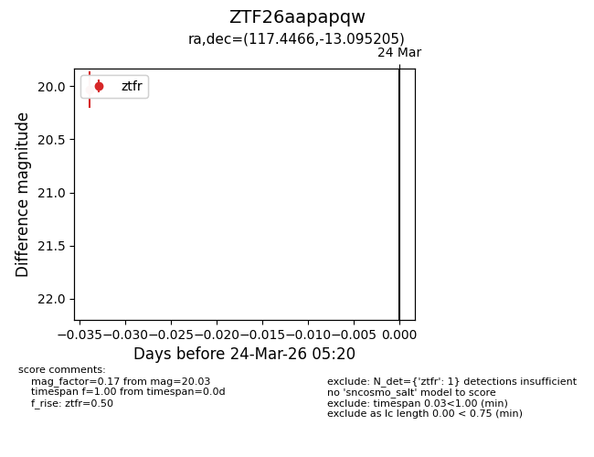
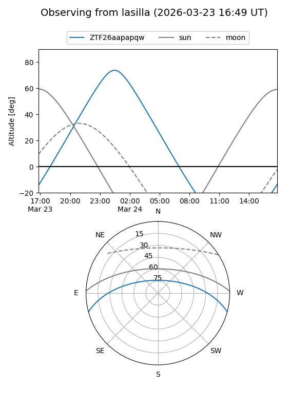
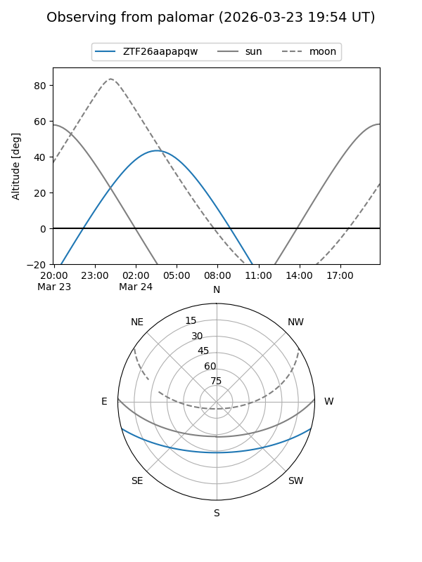

ZTF26aapapqw
Target ZTF26aapapqw at 2026-03-24 05:23
Aliases and brokers:
FINK: link
Lasair: link
ALeRCE: link
alt names
ZTF26aapapqw (ztf,fink_ztf)
Coordinates:
equatorial (ra, dec) = 117.4466,-13.09521
equatorial (HMS+DMS) = 07:49:47.18,-13:05:42.74
galactic (l, b) = (231.3285,+6.60385)
Flags:
Photometry:
last ztfr=20.03
1 ztfr detections
Lightcurve

Visibility


Additional plots